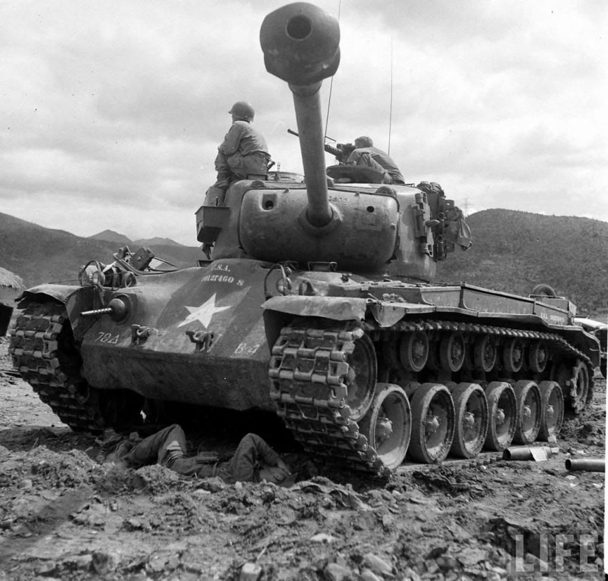

M26 Pershing
Słaby pancerz i uzbrojenie amerykańskiego Shermana sprawiły, że konstruktorzy w USA otrzymali zadanie opracowania nowego, znacznie lepszego czołgu. W 1944 roku do produkcji wszedł M26 Pershing opracowywany od 1943 roku. Początkowo określany jako czołg ciężki, z czasem przeklasyfikowano go na czołg średni (z powodu rozmiarów innych czołgów ciężkich jakie powstawały w USA od 1945 roku).
Nowy pojazd otrzymał potężną armatę M3 kalibru 90 mm, która miała porównywalne parametry do niemieckiej armaty KwK 36 kalibru 88 mm. Pancerz czołgu zwiększono do 102 mm, ale dzięki jego nachyleniu faktyczna grubość była znacznie większa. Łącznie zbudowano 2212 Pershingów.


Ostatnia aktualizacja: 17.11.2019